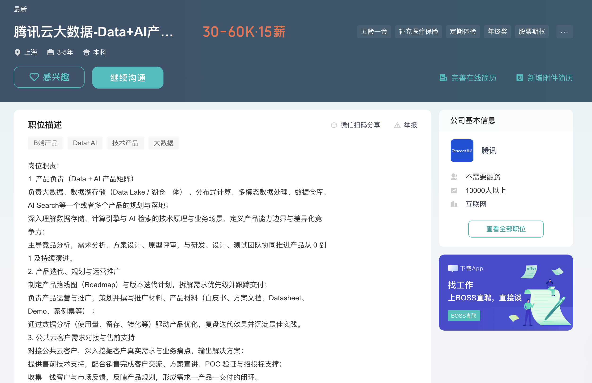
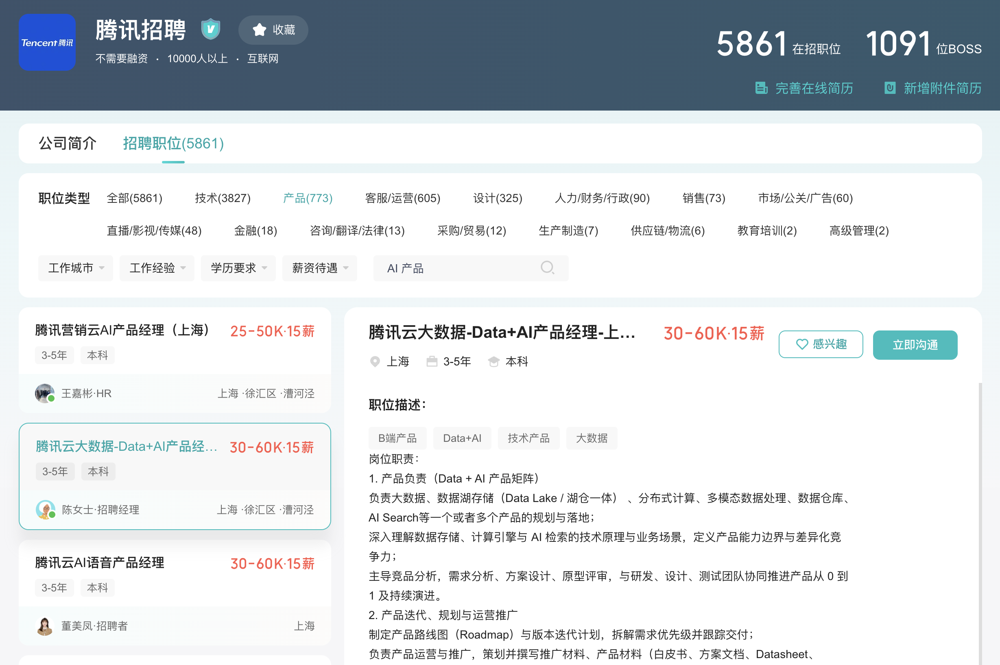

猎投
从岗位分析到确认投递
首次：配置 AI → 创建简历 → 上传解析；日常：分析岗位或加入清单 → 生成招呼语 → 确认投递；第三方网申页可一键智能填充。
配置 AI + 创建简历
在「设置」中填写 API 地址、模型和 Key，点击"测试连接"。DeepSeek 用户建议保持"关闭思考模式"开启，以减少等待时间。最多可创建 5 份简历，每份独立管理内容、图片和写作要求。
上传并解析简历
上传 JPG 或 PNG 简历图片，AI 会流式提取经历、项目、技能和量化成果。请检查并保存提取结果；生成招呼语时使用简历文字，实际投递时发送已保存的简历图片。
分析当前岗位并投递
打开 BOSS 职位列表或详情页，点击"分析当前岗位并投递"。插件会流式生成 JD 匹配分析和 3 种招呼语风格，完成后自动高亮"确认沟通并发送"按钮；选择或编辑后，再点击发送。

建立投递清单
浏览岗位时点击"加入投递清单"，最多保留 20 个待处理岗位。批量生成时，每个岗位保存 1 条可编辑招呼语，并绑定当时使用的简历。

批量生成招呼语
在投递清单先勾选要处理的岗位（或点击"全选"），再点击"批量生成招呼语"，仅对所选岗位逐个生成。页面会显示当前岗位、耗时和接收字符数；生成后可展开卡片检查岗位、绑定简历和招呼语，并直接修改保存。
开始投递与失败恢复
先勾选要投递的岗位（或点击"全选"），再点击"开始投递"，仅投递所选岗位。插件逐项打开详情，按岗位 ID 和标题核验目标，再处理正常沟通弹层、发送简历图片和招呼语；成功送达的卡片会显示打勾确认态，约 5 秒后自动消失并记入岗位库。连续 3 次失败会自动停止。普通失败项可展开并点击"保存修改"恢复待投递；"已发送待归档"不可重发。
智能填充网申表单
打开第三方公司的网申 / 信息录入页，切到侧边栏「智能填充」→ 确认简历 → 点击「一键智能填充」：自动扫描并展开经历区块，填充高置信项；剩余「需人工处理」项在列表确认后，点击「填充勾选项（N）」补填。首次使用需授权该网站；站点模板只记忆字段映射，不保存姓名、手机号等具体填写值。